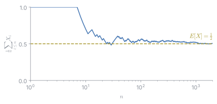

9 Weak and Strong Laws of Large Numbers
Probability spaces and random variables
\(\Omega\) is our set of outcomes of some random experiment, \(\mathcal M\) is the set of events to which we will assign a probability, and \(P(A)\) is the probability that an event occurs.1
1 A probability space thus automatically qualifies as finite, and therefore also \(\sigma\)-finite. This means that we can apply properties of the probability measure such as continuity from above without having to think twice.
A random variable is not random as it is just a function, but if the input \(\omega\) is random, then certainly \(X(\omega)\) is random. Hence we call it a random variable.
2 We demand \(X\) to be measurable, hence the preimage of \(A\subseteq R\) is contained in \(\mathcal M\) and we can thus assign a meaningful probability to that event.
Independence
In other words, if we take the intersection of the preimages of our Borel sets (which we know is also an element of the sigma-algebra \(\mathcal M\)), which we can think of as the probability of all events happening simultaneously, is the same as evaluating the probability for each event, i.e. joint probability factorizes into marginals.
Constructing infinitely many independent random variables
There are two standard ways to build a probability space carrying an infinite sequence of independent random variables.
An infinite product space. The product construction of Lecture 8 extends to infinitely many probability spaces. If the \(n\)-th random variable depends only on the \(n\)-th coordinate, the random variables are independent, essentially by the definition of the product measure.
The unit interval. Take \(([0,1], \mathcal B_{[0,1]}, m)\) with \(m\) the Lebesgue measure, which is a probability measure on \([0,1]\). Every \(x \in [0,1]\) has a binary expansion \(x = \sum_n a_n(x)/2^n\) with \(a_n(x) \in \{0,1\}\), unique except for the countably many dyadic rationals (for example \(1/2 = 0.1000\ldots = 0.0111\ldots\)). Setting \(X_n(x) = 1\) if \(a_n(x) = 1\) and \(X_n(x) = -1\) otherwise gives an i.i.d. sequence of fair \(\pm 1\) coin flips. The strong law of large numbers then says that almost every \(x \in [0,1]\) has, asymptotically, equally many \(0\)s and \(1\)s in its binary expansion.
The laws of large numbers
The two laws say different things about coin flipping. The weak law says that after many flips, the fraction of heads is, with high probability, within any fixed margin of \(1/2\), for example in \([0.499, 0.501]\). The strong law says that with probability one, the fraction of heads converges to \(1/2\) as the number of flips goes to infinity.

Remember that a.e. convergence implies convergence in measure on finite measure spaces, and thus (ii) implies (i). Proof of WLLN is simpler than for SLLN and WLLN holds in certain cases where the SLLN does not.
WLLN says something like: if you flip a coin a zillion times, then with high probability, percentage of heads will be in some small interval around \(1/2\). The SLLN tells us that if you were to flip a coin an infinite number of times, then with probability 1, the percentage of heads would converge to 1/2.
Remember that two r.vs. can have the same probability distribution but still live in different probability spaces. For example, the outcome of a fair coin on \(\Omega = \{H, T\}\) and the outcome of a fair die being even or odd on \(\Omega' = \{1,2,3,4,5,6\}\) have the same Bernoulli\((1/2)\) distribution but live on different spaces.3
3 Independent events. Events \(E_1, E_2, \ldots\) are independent if their indicator functions \(1_{E_1}, 1_{E_2}, \ldots\) are independent random variables in the sense of Definition 9.5 and Definition 9.6. Equivalently, \(P(E_{i_1}\cap\cdots\cap E_{i_k}) = P(E_{i_1})\cdots P(E_{i_k})\) for every finite set of distinct indices \(i_1, \ldots, i_k\).
The second Borel–Cantelli lemma
One consequence of the second Borel–Cantelli lemma (Lemma 9.9) is the infinite monkey theorem below.
Side topic: The infinite monkey theorem
Say a monkey types on a keyboard with 26 letters, hitting each key uniformly at random, producing an infinite sequence of letters like XQBTHZAM...
A string is a specific finite sequence of letters — say HAMLET (6 letters), or in the extreme case the entire text of Hamlet (~130,000 characters). Position \(n\) means the \(n\)-th character in the infinite sequence the monkey produces.
Define \(E_n\) to be the event that starting at position \(n\), the next \(k\) characters spell out exactly the target string. For example if the target is HAMLET:
\[E_n = \{\text{characters } n, n+1, n+2, n+3, n+4, n+5 \text{ are H, A, M, L, E, T}\}\]
Each \(E_n\) has probability \(p = (1/26)^6 > 0\), small but positive, and the same for every \(n\) since keystrokes are independent. The events \(E_1, E_{k+1}, E_{2k+1},\ldots\) at non-overlapping blocks are independent since they depend on disjoint sets of keystrokes. Since:
\[\sum_{n=1}^\infty P(E_n) = \sum_{n=1}^\infty p = \infty\]
the second Borel–Cantelli lemma (Lemma 9.9) gives \(P(E_n \text{ i.o.}) = 1\) — the monkey types HAMLET infinitely often with probability 1. This holds for any target string, no matter how long: even a full textbook of \(N\) characters has \((1/26)^N > 0\), so the sum still diverges and the conclusion is the same.